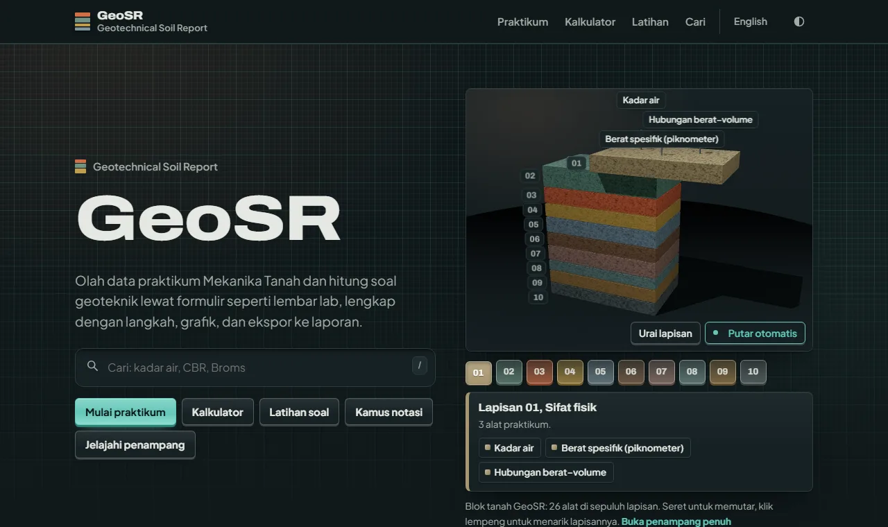

GeoSR: alat olah data praktikum dan kalkulator geoteknik
Situs web supaya data praktikum Mekanika Tanah dan latihan hitungan geoteknik bisa diolah dengan langkah yang jelas dan sumber yang bisa dicek.
- Acara atau tempat
- Proyek pribadi, terbuka di GitHub
- Tahun
- 2026
- Peran saya
- Pembuat.
- Hasil
- 18 alat praktikum, 6 kalkulator, bank soal
- Perangkat lunak
- HTML, CSS, JavaScript, Python, Git, GitHub
- Jenis
- Alat (GeoSR), Praktikum dan asisten lab, Perhitungan
Masalah
Mengolah data praktikum Mekanika Tanah dan latihan hitungan geoteknik sering berhenti di angka akhir tanpa langkah dan sumber rumus yang jelas.
Yang dikerjakan
- Delapan belas alat pengolah data praktikum yang mengikuti form lab.
- Enam kalkulator geoteknik dan bank soal latihan.
- Setiap rumus menyebut sumbernya, dan hasil alat praktikum diuji otomatis terhadap angka di contoh laporan.
Gambar dan video


